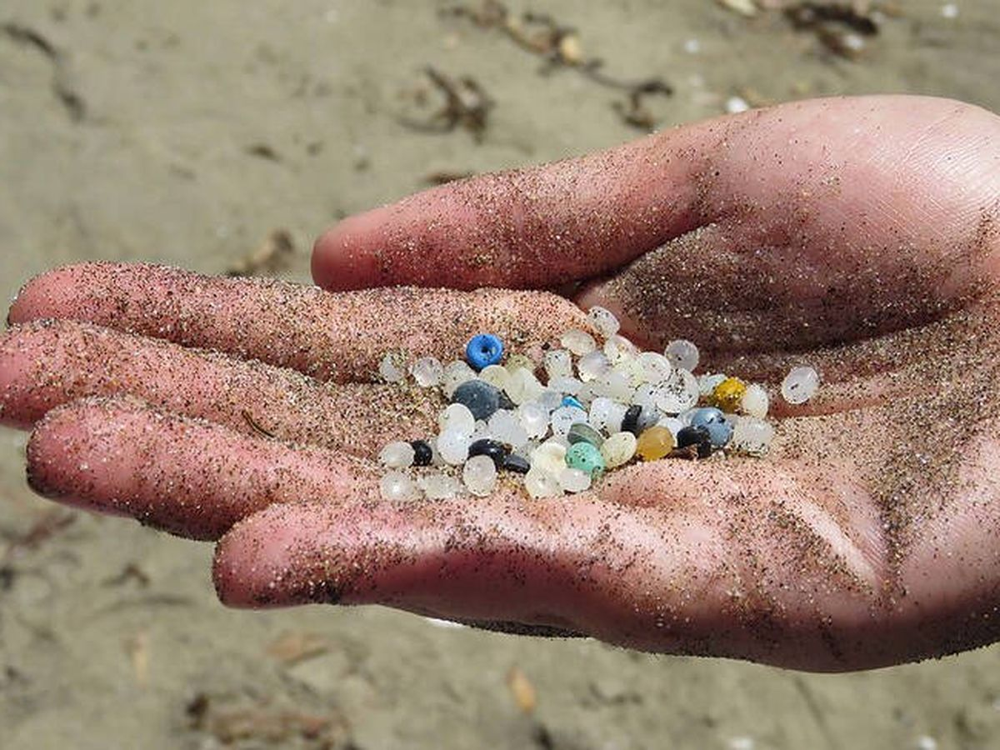
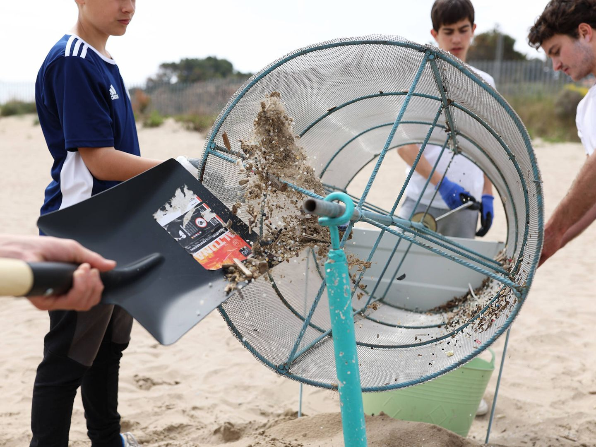
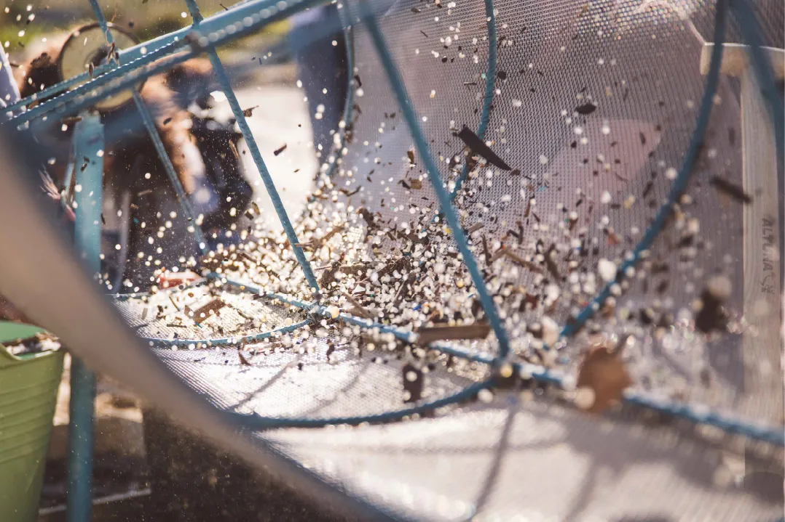
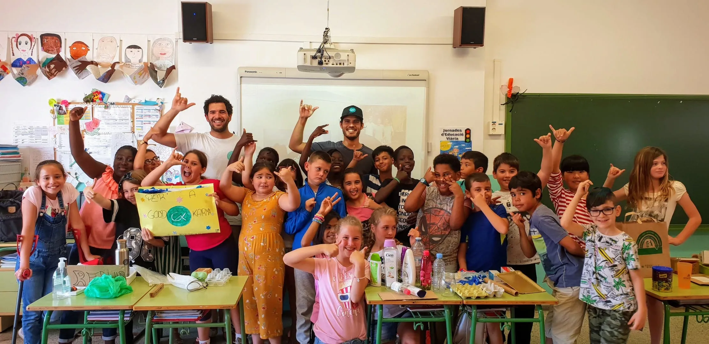
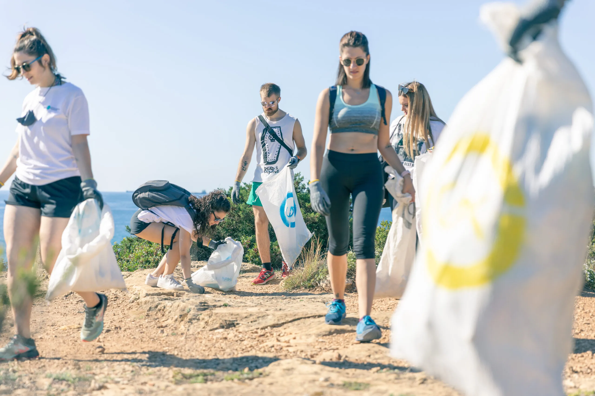

13 · Microplásticos
Good Karma Projects
Good Karma Projects es una organización sin ánimo de lucro que desarrolla proyectos de educación, investigación ciudadana y acción ambiental. Clara Comas coordina comunicación y MedPellets.





MedPellets
Los pellets son pequeñas esferas de plástico, de unos 3 a 5 milímetros, utilizadas como materia prima industrial. Su tamaño hace que se dispersen y se confundan con la arena. MedPellets documenta su presencia, moviliza ciencia ciudadana y busca prevenir las pérdidas en origen.
Tarragona
El complejo petroquímico de Tarragona concentra una gran producción de plásticos cerca del litoral. La lluvia y los sistemas de drenaje pueden transportar pellets perdidos hacia ríos y playas. Fotografiar el problema exige trabajar a dos escalas: la acumulación casi invisible en la arena y la infraestructura industrial que la origina.
Contacto y siguiente paso
Clara Comas respondió el 21 de octubre de 2026 y propuso hacer una llamada o quedar en persona para conocer ambas partes del proyecto. El siguiente paso es coordinar ese encuentro y consultar próximas jornadas de muestreo, clasificación o limpieza que se puedan acompañar y fotografiar.
Interesa conocer el protocolo de ciencia ciudadana y entender cómo convierten los datos recogidos en la playa en comunicación e incidencia pública.